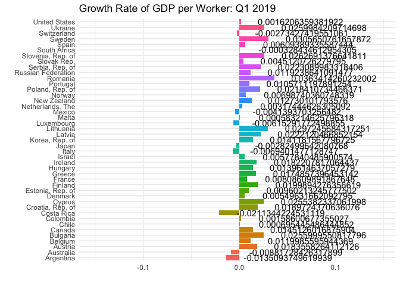
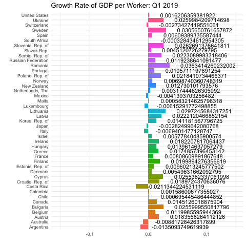
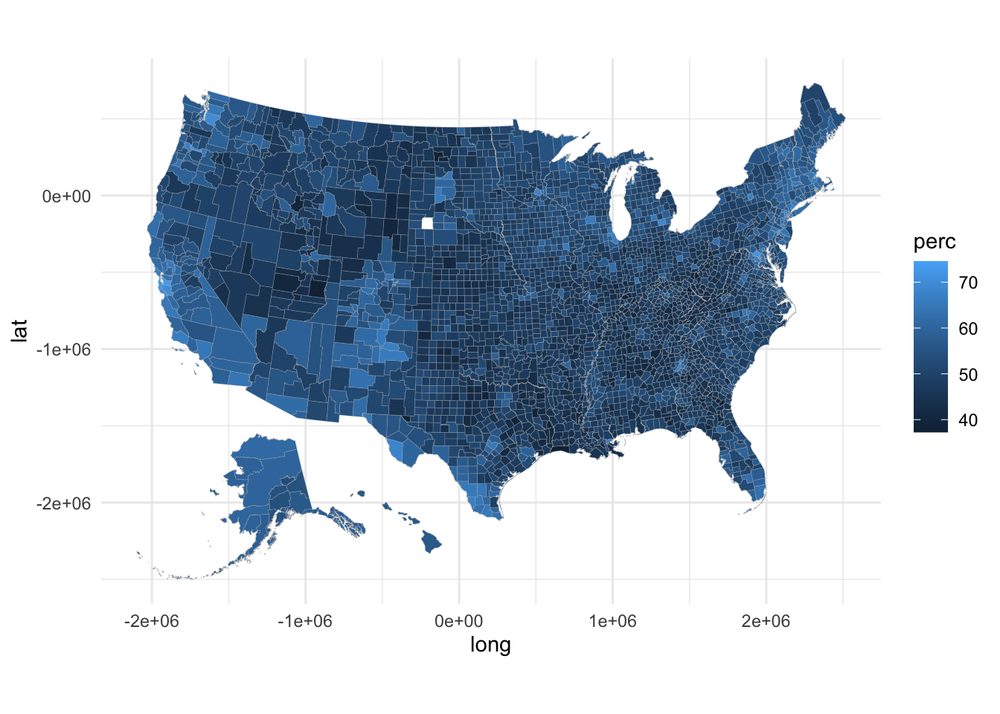
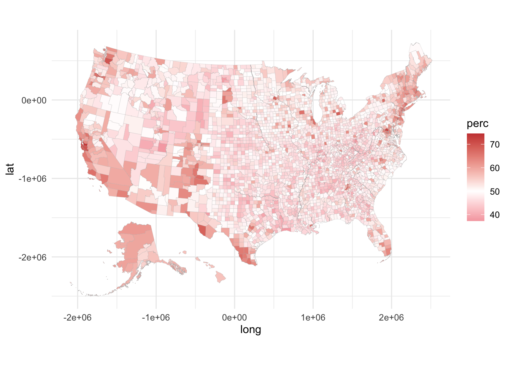

imf_growth <- read.csv(url('https://bcdanl.github.io/data/imf_growth_quarterly.csv'))
library(ggplot2)
library(ggthemes)
library(tidyverse)## ── Attaching packages ────────────────────────────────────── tidyverse 1.3.1 ──## ✓ tibble 3.1.4 ✓ dplyr 1.0.7
## ✓ tidyr 1.1.3 ✓ stringr 1.4.0
## ✓ readr 2.0.1 ✓ forcats 0.5.1
## ✓ purrr 0.3.4## ── Conflicts ───────────────────────────────────────── tidyverse_conflicts() ──
## x dplyr::filter() masks stats::filter()
## x dplyr::lag() masks stats::lag()library(plotly)##
## Attaching package: 'plotly'## The following object is masked from 'package:ggplot2':
##
## last_plot## The following object is masked from 'package:stats':
##
## filter## The following object is masked from 'package:graphics':
##
## layoutlibrary(socviz)
library(ggiraph)## Warning: package 'ggiraph' was built under R version 4.0.5library(dplyr)
# install.packages("gganimate")
library(gganimate)
mf_growth <- imf_growth %>%
mutate(gy = round(gy, digits = 3))
p <- ggplot(imf_growth, aes(x= country, y= gy, fill= country))+
geom_col()+ geom_text(aes(label=as.character(gy), hjust = -0.2))+ coord_flip()
fig_GDP <- p + transition_states(quarter, transition_length = 1, state_length =1) +
labs(title = "Growth Rate of GDP per Worker: {closest_state}", x = "", y= "")+
theme_minimal()+ theme(legend.position = "none")
fig_GDP## ```
Rendering [>——————————————] at 2.6 fps ~ eta: 38s Rendering [>——————————————] at 3.1 fps ~ eta: 32s Rendering [=>—————————————–] at 3.4 fps ~ eta: 28s Rendering [=>—————————————–] at 3.6 fps ~ eta: 26s Rendering [==>—————————————-] at 3.7 fps ~ eta: 26s Rendering [==>—————————————-] at 3.8 fps ~ eta: 24s Rendering [===>—————————————–] at 4 fps ~ eta: 23s Rendering [===>—————————————] at 4.1 fps ~ eta: 22s Rendering [====>————————————–] at 4.2 fps ~ eta: 21s Rendering [====>————————————–] at 4.3 fps ~ eta: 21s Rendering [=====>————————————-] at 4.2 fps ~ eta: 21s Rendering [=====>—————————————] at 4 fps ~ eta: 21s Rendering [=====>————————————-] at 3.7 fps ~ eta: 23s Rendering [======>————————————] at 3.7 fps ~ eta: 23s Rendering [======>————————————] at 3.7 fps ~ eta: 22s Rendering [=======>———————————–] at 3.8 fps ~ eta: 22s Rendering [=======>———————————–] at 3.8 fps ~ eta: 21s Rendering [========>———————————-] at 3.8 fps ~ eta: 21s Rendering [========>———————————-] at 3.9 fps ~ eta: 20s Rendering [=========>———————————–] at 4 fps ~ eta: 19s Rendering [==========>———————————-] at 4 fps ~ eta: 19s Rendering [==========>——————————–] at 4.1 fps ~ eta: 18s Rendering [===========>——————————-] at 4.1 fps ~ eta: 18s Rendering [===========>——————————-] at 4.2 fps ~ eta: 17s Rendering [============>——————————] at 4.1 fps ~ eta: 17s Rendering [=============>——————————-] at 4 fps ~ eta: 17s Rendering [=============>—————————–] at 4.1 fps ~ eta: 17s Rendering [==============>—————————-] at 3.9 fps ~ eta: 17s Rendering [==============>—————————-] at 3.9 fps ~ eta: 16s Rendering [===============>—————————] at 3.9 fps ~ eta: 16s Rendering [===============>—————————] at 3.8 fps ~ eta: 16s Rendering [================>————————–] at 3.9 fps ~ eta: 16s Rendering [================>————————–] at 3.9 fps ~ eta: 15s Rendering [=================>————————-] at 3.8 fps ~ eta: 15s Rendering [==================>————————] at 3.7 fps ~ eta: 15s Rendering [===================>———————–] at 3.8 fps ~ eta: 14s Rendering [====================>———————-] at 3.8 fps ~ eta: 14s Rendering [====================>———————-] at 3.8 fps ~ eta: 13s Rendering [=====================>———————] at 3.8 fps ~ eta: 13s Rendering [=====================>———————] at 3.9 fps ~ eta: 13s Rendering [=====================>———————] at 3.9 fps ~ eta: 12s Rendering [======================>——————–] at 3.9 fps ~ eta: 12s Rendering [=======================>——————-] at 3.9 fps ~ eta: 11s Rendering [=========================>——————-] at 4 fps ~ eta: 11s Rendering [==========================>——————] at 4 fps ~ eta: 10s Rendering [===========================>—————–] at 4 fps ~ eta: 10s Rendering [===========================>—————–] at 4 fps ~ eta: 9s Rendering [============================>—————-] at 4 fps ~ eta: 9s Rendering [=============================>—————] at 4 fps ~ eta: 9s Rendering [=============================>—————] at 4 fps ~ eta: 8s Rendering [==============================>————–] at 4 fps ~ eta: 8s Rendering [==============================>————–] at 4 fps ~ eta: 7s Rendering [===============================>————-] at 4 fps ~ eta: 7s Rendering [================================>————] at 4 fps ~ eta: 7s Rendering [===============================>———–] at 4.1 fps ~ eta: 6s Rendering [=================================>———–] at 4 fps ~ eta: 6s Rendering [==================================>———-] at 4 fps ~ eta: 6s Rendering [=================================>———] at 3.9 fps ~ eta: 6s Rendering [=================================>———] at 3.9 fps ~ eta: 5s Rendering [==================================>——–] at 3.9 fps ~ eta: 5s Rendering [===================================>——-] at 3.9 fps ~ eta: 4s Rendering [====================================>——] at 3.9 fps ~ eta: 4s Rendering [====================================>——] at 3.9 fps ~ eta: 3s Rendering [=====================================>—–] at 3.9 fps ~ eta: 3s Rendering [=======================================>—–] at 4 fps ~ eta: 3s Rendering [========================================>—-] at 4 fps ~ eta: 2s Rendering [=======================================>—] at 3.9 fps ~ eta: 2s Rendering [========================================>–] at 3.9 fps ~ eta: 1s Rendering [===========================================>-] at 4 fps ~ eta: 1s Rendering [============================================>] at 4 fps ~ eta: 0s Rendering [=============================================] at 4 fps ~ eta: 0s
```r
animate(fig_GDP, renderer = gifski_renderer("Byrne_hw4_q1.gif"))##
Rendering [>------------------------------------------] at 5.8 fps ~ eta: 17s
Rendering [=>-----------------------------------------] at 5.9 fps ~ eta: 16s
Rendering [=>-----------------------------------------] at 5.8 fps ~ eta: 16s
Rendering [==>----------------------------------------] at 5.3 fps ~ eta: 18s
Rendering [==>----------------------------------------] at 4.6 fps ~ eta: 20s
Rendering [==>----------------------------------------] at 4.5 fps ~ eta: 20s
Rendering [===>---------------------------------------] at 4.5 fps ~ eta: 20s
Rendering [===>---------------------------------------] at 4.6 fps ~ eta: 20s
Rendering [====>--------------------------------------] at 4.7 fps ~ eta: 19s
Rendering [====>--------------------------------------] at 4.8 fps ~ eta: 18s
Rendering [=====>-------------------------------------] at 4.9 fps ~ eta: 18s
Rendering [=====>-------------------------------------] at 4.9 fps ~ eta: 17s
Rendering [======>--------------------------------------] at 5 fps ~ eta: 17s
Rendering [======>------------------------------------] at 5.1 fps ~ eta: 17s
Rendering [======>------------------------------------] at 5.1 fps ~ eta: 16s
Rendering [=======>-----------------------------------] at 5.1 fps ~ eta: 16s
Rendering [=======>-----------------------------------] at 5.2 fps ~ eta: 16s
Rendering [========>----------------------------------] at 5.2 fps ~ eta: 15s
Rendering [========>----------------------------------] at 5.3 fps ~ eta: 15s
Rendering [=========>---------------------------------] at 5.3 fps ~ eta: 14s
Rendering [==========>--------------------------------] at 5.4 fps ~ eta: 14s
Rendering [===========>-------------------------------] at 5.4 fps ~ eta: 14s
Rendering [===========>-------------------------------] at 5.4 fps ~ eta: 13s
Rendering [============>------------------------------] at 5.3 fps ~ eta: 13s
Rendering [============>------------------------------] at 5.2 fps ~ eta: 13s
Rendering [=============>-----------------------------] at 5.1 fps ~ eta: 13s
Rendering [=============>-----------------------------] at 5.2 fps ~ eta: 13s
Rendering [==============>----------------------------] at 5.2 fps ~ eta: 13s
Rendering [==============>----------------------------] at 5.2 fps ~ eta: 12s
Rendering [===============>---------------------------] at 5.2 fps ~ eta: 12s
Rendering [================>--------------------------] at 5.2 fps ~ eta: 12s
Rendering [================>--------------------------] at 5.2 fps ~ eta: 11s
Rendering [=================>-------------------------] at 5.2 fps ~ eta: 11s
Rendering [==================>------------------------] at 5.2 fps ~ eta: 11s
Rendering [===================>-----------------------] at 5.2 fps ~ eta: 10s
Rendering [====================>----------------------] at 5.2 fps ~ eta: 10s
Rendering [=====================>---------------------] at 5.1 fps ~ eta: 10s
Rendering [======================>----------------------] at 5 fps ~ eta: 10s
Rendering [=====================>---------------------] at 4.9 fps ~ eta: 10s
Rendering [======================>--------------------] at 4.9 fps ~ eta: 10s
Rendering [======================>--------------------] at 4.9 fps ~ eta: 9s
Rendering [=======================>-------------------] at 4.9 fps ~ eta: 9s
Rendering [=========================>-------------------] at 5 fps ~ eta: 9s
Rendering [=========================>-------------------] at 5 fps ~ eta: 8s
Rendering [==========================>------------------] at 5 fps ~ eta: 8s
Rendering [===========================>-----------------] at 5 fps ~ eta: 8s
Rendering [===========================>-----------------] at 5 fps ~ eta: 7s
Rendering [============================>----------------] at 5 fps ~ eta: 7s
Rendering [=============================>---------------] at 5 fps ~ eta: 7s
Rendering [==============================>--------------] at 5 fps ~ eta: 6s
Rendering [=============================>-------------] at 4.9 fps ~ eta: 6s
Rendering [==============================>------------] at 4.8 fps ~ eta: 6s
Rendering [===============================>-----------] at 4.8 fps ~ eta: 5s
Rendering [===============================>-----------] at 4.9 fps ~ eta: 5s
Rendering [================================>----------] at 4.9 fps ~ eta: 5s
Rendering [=================================>---------] at 4.9 fps ~ eta: 5s
Rendering [=================================>---------] at 4.9 fps ~ eta: 4s
Rendering [==================================>--------] at 4.9 fps ~ eta: 4s
Rendering [===================================>-------] at 4.9 fps ~ eta: 3s
Rendering [=====================================>-------] at 5 fps ~ eta: 3s
Rendering [======================================>------] at 5 fps ~ eta: 3s
Rendering [=======================================>-----] at 5 fps ~ eta: 2s
Rendering [========================================>----] at 5 fps ~ eta: 2s
Rendering [=======================================>---] at 4.9 fps ~ eta: 2s
Rendering [=======================================>---] at 4.9 fps ~ eta: 1s
Rendering [========================================>--] at 4.9 fps ~ eta: 1s
Rendering [===========================================>-] at 5 fps ~ eta: 1s
Rendering [===========================================>-] at 5 fps ~ eta: 0s
Rendering [============================================>] at 5 fps ~ eta: 0s
Rendering [=============================================] at 5 fps ~ eta: 0s

knitr::include_graphics("Byrne_hw4_q1.gif")
#question 2
climate_opinion <- read.csv(
'https://bcdanl.github.io/data/climate_opinion_2021.csv')
# install.packages("socviz")
library(socviz)
library(dplyr)
library(ggplot2)
library(tidyverse)
library(plotly)
county_map <- county_map
climate_opinion <- climate_opinion %>% filter(belief == "human")
class(climate_opinion$id)## [1] "integer"class(county_map$id)## [1] "character"#
climate_opinion <- climate_opinion %>% mutate(id = as.numeric(id))
county_map <- county_map %>% mutate(id = as.numeric(id))
climate_opinion_full <- left_join(climate_opinion, county_map, by = 'id')
g <- ggplot(climate_opinion_full, aes(long, lat, fill = perc, group = group, tooltip = perc, data_id = perc)) +
geom_polygon_interactive(color = "gray70", size = .05) +
coord_equal()
g
g2 <- g + scale_fill_gradient2(
low = "2E74C0",
mid = "white",
high = "#CB4541",
na.value = "grey50",
midpoint = 50)
g2
# map_interactive <- ggiraph(ggobj = g2)
# map_interactive
#save the widget
# library(htmlwidgets)
# saveWidget(map_interactive, file = paste0(getwd(), "/climate_opinion_map_interactive.html"))